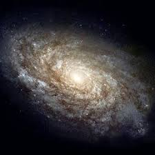

Why Is It Called The "Solar" System?
There are many planetary systems like ours in the universe, with planets orbiting a host star. Our planetary system is named the "solar" system because our Sun is named Sol, after the Latin word for Sun, "solis," and anything related to the Sun we call "solar."
Our planetary system is located in an outer spiral arm of the Milky Way galaxy.
Our solar system consists of our star, the Sun, and everything bound to it by gravity — the planets Mercury, Venus, Earth, Mars, Jupiter, Saturn, Uranus and Neptune, dwarf planets such as Pluto, dozens of moons and millions of asteroids, comets and meteoroids. Beyond our own solar system, we have discovered thousands of planetary systems orbiting other stars in the Milky Way.
